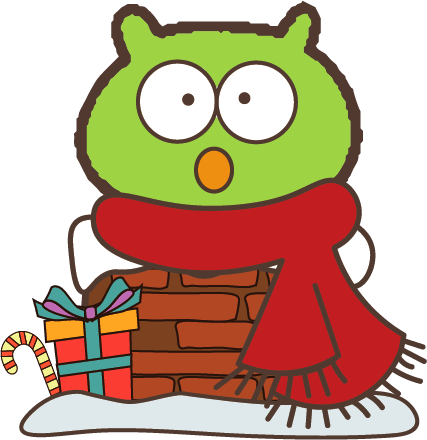

NTPU elves
warm your heart
你是哪種聖誕可愛鬼?
NTPU elves
warm your heart
你是哪種聖誕可愛鬼?
你的聖誕可愛鬼是......煙囪滑梯專家!💨

-----------------------------------------
這些可愛鬼可能喜歡從煙囪滑進家裡，代替聖誕老人，這某種程度上造成了聖誕老人的困擾...
總是帶著一條超大紅色圍巾，可以幫助他滑下煙囪的時候不會那麼痛。
個性貼心、善解人意，行動力很強，但有時候有衝動，總是在他人最需要的時候莫名其妙地出現。
-----------------------------------------
與你合得來的聖誕可愛鬼有......癱在地上的一攤雪、來自德國農場的聖誕樹
點選文字看看你的可愛好朋友是誰!